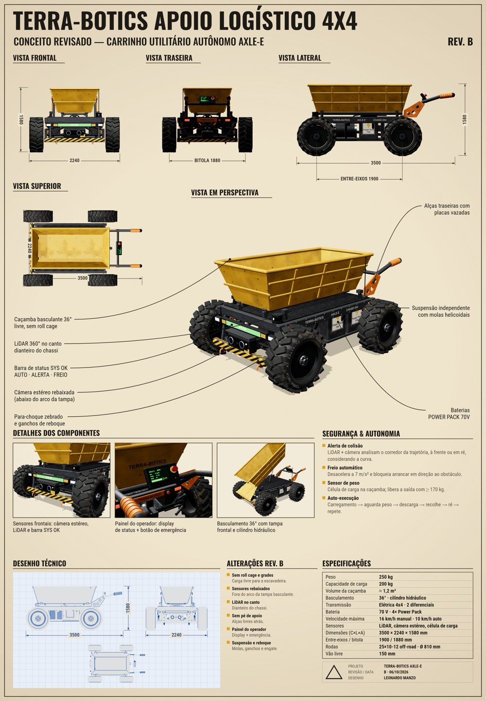

AXLE-E
Terra-Botics: carrinho utilitário autônomo para obra
Um carrinho elétrico 4x4 que transporta cascalho e entulho sozinho pelo canteiro: espera a escavadeira encher a caçamba, leva a carga ao bota-fora, bascula e volta. Aqui está o projeto inteiro, do modelo 3D à simulação jogável.
Como chegamos aqui
Do primeiro modelo 3D à revisão pensada para operar sozinha com escavadeira e bota-fora, testada numa simulação de canteiro.
- 1
Modelo 3D na web
Reconstrução em Three.js com texturas PBR geradas por código: pintura gasta, banda de rodagem, chapa xadrez e plástico nervurado.
- 2
Revisão B
Sem roll cage e sem grades, sensores rebaixados para fora do arco da tampa, LiDAR no canto, painel do operador e suspensão com molas.
- 3
Simulação de obra
Canteiro com escavadeira, trabalhadores, alerta de colisão, freio automático, sensor de peso e ciclo de transporte autônomo.
- 4
Ficha técnica
Vistas, cotas e especificações geradas a partir do próprio modelo, para a ficha nunca divergir do carrinho.
Modelo 3D
Gire, aproxime e veja de qualquer ângulo. É o mesmo modelo usado na simulação e na ficha técnica.

Revisão B · 3500 × 2240 × 1580 mm · arraste para girar, role para aproximar
Simulação na obra
Dirija você mesmo ou ligue a auto-execução e veja o carrinho trabalhar sozinho. Trabalhadores cruzam as vias: o sensor alerta e o freio automático para o carrinho a tempo.
Ficha técnica
Desenhada a partir do próprio modelo 3D: as vistas, as cotas e as especificações saem direto da geometria da revisão B.
- Roll cage e grades removidos: a escavadeira carrega por cima
- Câmera e barra de status abaixo do arco da tampa basculante
- LiDAR no canto dianteiro do chassi
- Pé de apoio traseiro removido
- Painel do operador com display e botão de emergência
- Suspensão com molas, ganchos e engate de reboque